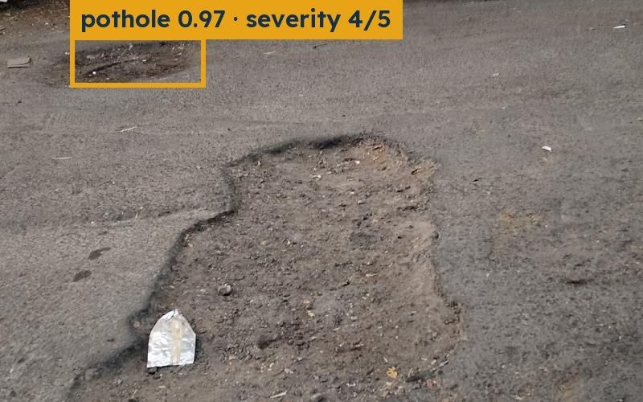

Sabeel (RoadScan)
A citizen photographs a pothole, a YOLOv8n model grades its severity, two reports within 5 m merge into one, and a RAG agent drafts the repair order citing the actual law, routed to the municipality or the roads authority.
- I own the RAG work-order agent and the work sheets it produces.
Chroma · YOLOv8n (ONNX) · FastAPI · PostGIS · Flutter · React
